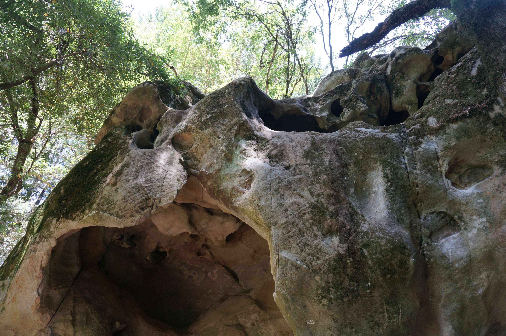
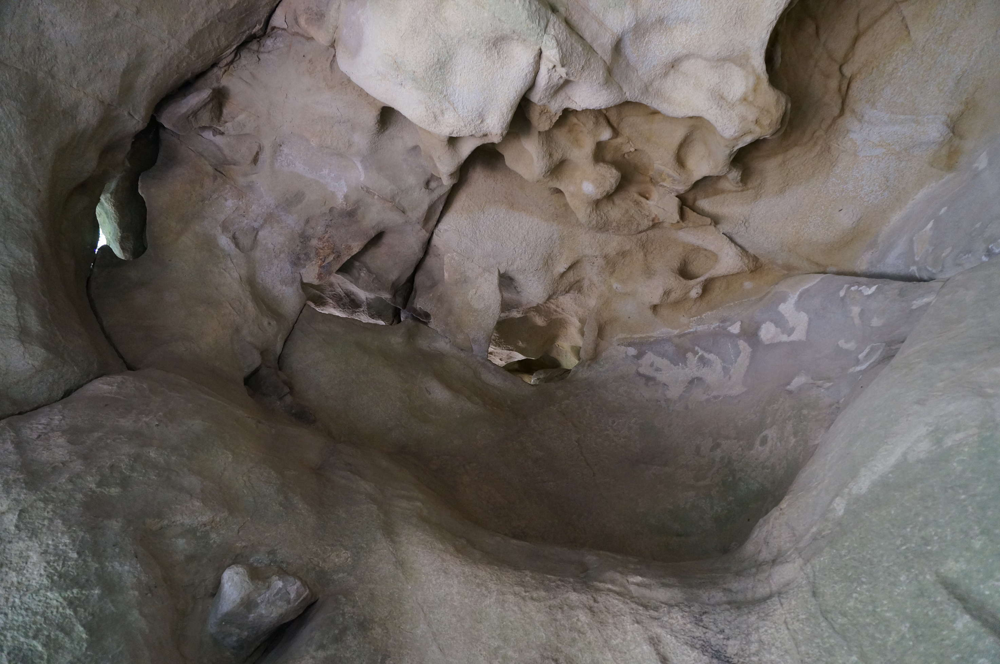
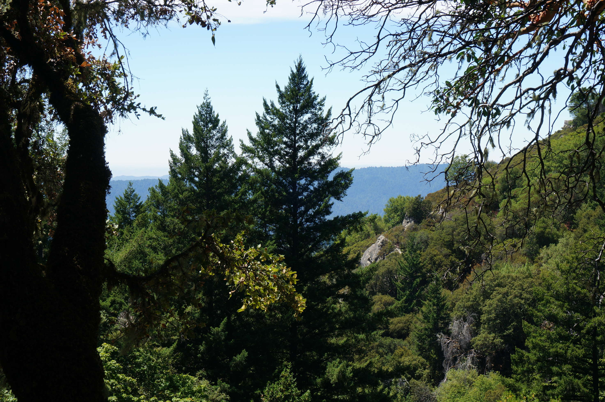
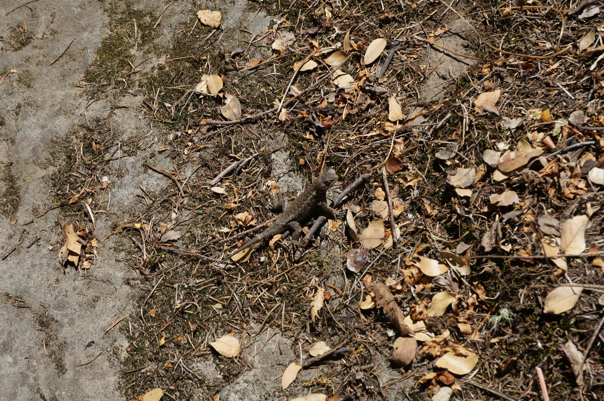
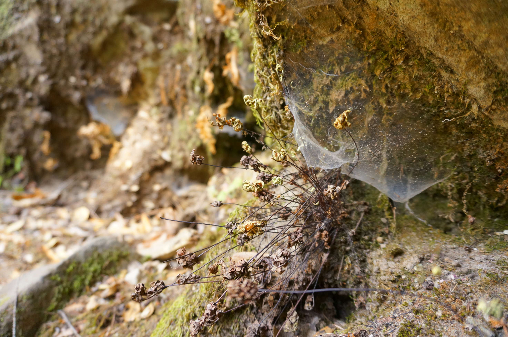
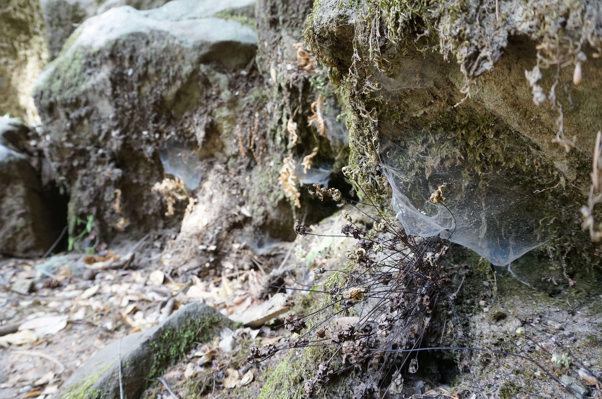
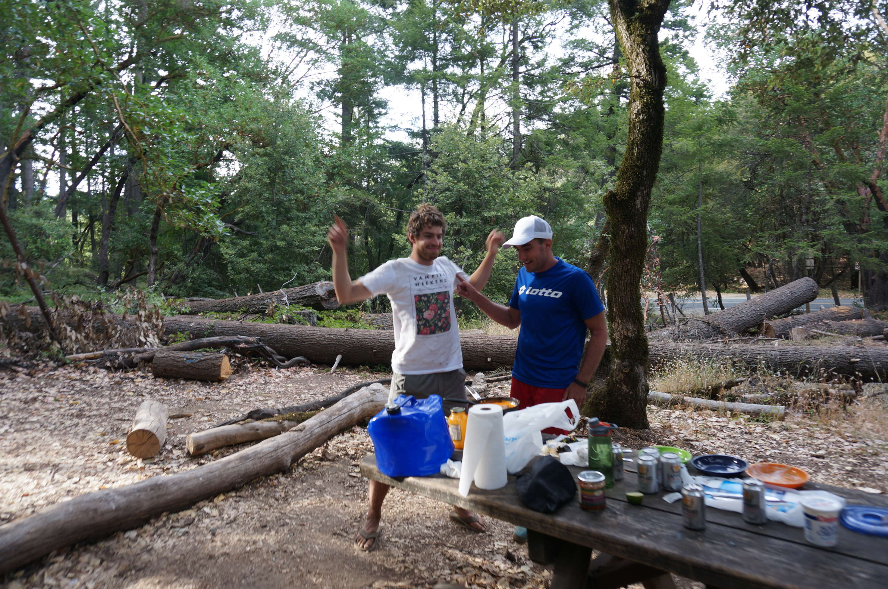
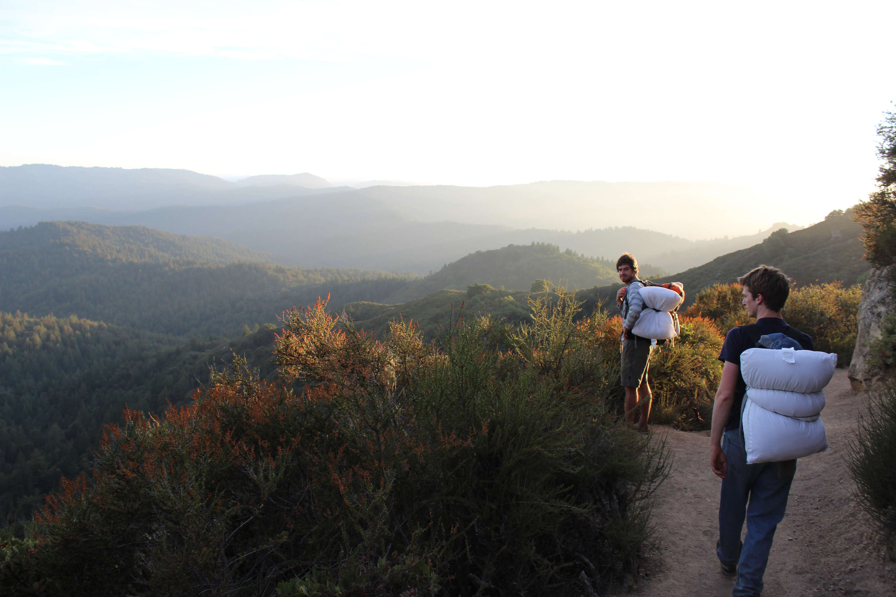

The next day: climbing! A short hike in to see some really nice rock formations:
 Of course it was in beautiful scenery.
Apparently I saw a lizard on the way in. I have no recollection of this. Blog close to the even people!
These spiderwebs were dotted around everywhere, kinda cool.
Also a fun opportunity to mess with camera settings.
Berry did a few climbs, Florian and I both did one but barefoot as we didn't have shoes that fit. Fun but a lot harder, much worse grip.
Later on: dinner by a table at the entrance, shared with a silicon-valley guy we had a debate with over the american schooling system.
We then found an awesome hike-in campsite. We left it a bit late to hike in, so were walking for a while watching an amazing sunset. Fortunately, the weather was amazing, so we left the tent behind and slept out under the stars.
The next day we headed back to San Fransisco to meet Garret Swan.